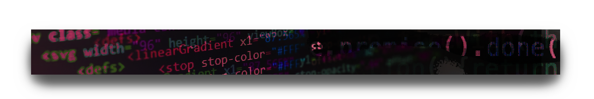

Week 1: Orientation

A semi-neurotic thought spiral about websites
A website has ever-evolving definitions, and depending who you are asking, the answer would most likely vary. A website might be space to collect, hold memories, connect. It might be a place to trade, sell and grow. It could be a space to explore and a never ending labyrinth for discovery. Do we always need to search or can we be still on the internet?
What is the relationship between the internet to a website? The internet is to ______, as a website is to _________.
That leads me to then ask what affordance does a website provide for a human? In interactive design, according to Adobe, affordances are "a relationship between a person and a physical or digital object." Human to website affordances yield a result. What result do you hope a website you create will yield?
My Website is a ________________________________
We are returning to the early days of the internet and establishing our own home pages. This can be a page that you feel would invite a visitor like you would when you open your door to your home. But continuing the theme as website as a metaphor, what is your website?
You can respond to this prompt by articulating your idea however you would like. Is it cool drawings or doodles that you want to share? A poem or short story, even? A map to your favorite place or maybe even a made up land?
What ever it is, this is your first web page in our collective web zine. So you should introduce yourself the best way you know how.
Include a list of interests and hobbies you can use this page as inspiration ~ We are only doing HTML structure for this so far, here are some slides that will help you set it up.